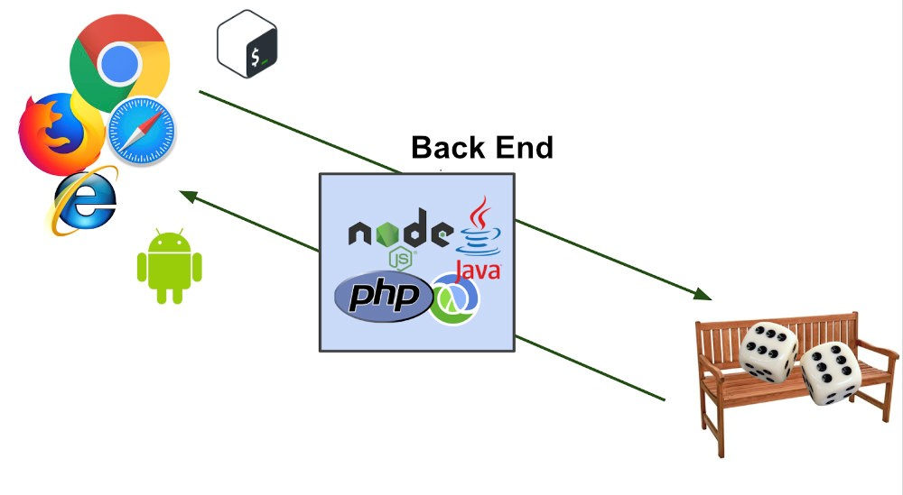

O que são Linguagens de programação?
Podemos definir uma linguagem de programação como um sistema de comunicação estruturado, composto por conjuntos de símbolos, palavras-chaves, regras semânticas e sintáticas que permitem o entendimento entre um programador e uma máquina. Linguagens de programação são a base para a construção de todos os aplicativos digitais que usamos no dia a dia, como por exemplo, esse leitor documento.
Através dela nós temos a possibilidade de dar uma série de instruções e ordens, para criar um programa que controla algum componente físico e/ou lógico de um computador.
Programador e máquina se comunicam por meio dessa linguagem, permitindo especificar, com precisão, aspectos como:
- quais dados um software deve operar;
- como esses dados devem ser armazenados ou transmitidos;
- quais ações o software deve executar, de acordo com cada circunstância variável.
Linguagens de Programação Back-end
Back End vem da ideia do que tem por trás de uma aplicação. Pode ficar meio abstrato em um primeiro momento, mas pense que para conseguir usar o Facebook no dia a dia, os dados do seu perfil, amigos e publicações precisam estar salvos em algum lugar, sendo esse lugar um banco de dados e processados a partir de lá. Não basta apenas o front-end em HTML e CSS! O Back End trabalha em boa partes dos casos fazendo a ponte entre os dados que vem do navegador rumo ao banco de dados e vice-versa, sempre aplicando as devidas regras de negócio, validações e garantias em um ambiente onde o usuário final não tenha acesso e possa manipular algo.
É comum desenvolvedores Back End trabalharem com ferramentas de linha de comando, sites (deixando o HTML dinâmico), análise de dados (embora isso puxe mais o que um Data Scientist faz). Tudo isso pode ser feito com uma série de linguagens diferentes como: PHP, Ruby, Java, Clojure, C# entre diversas outras.